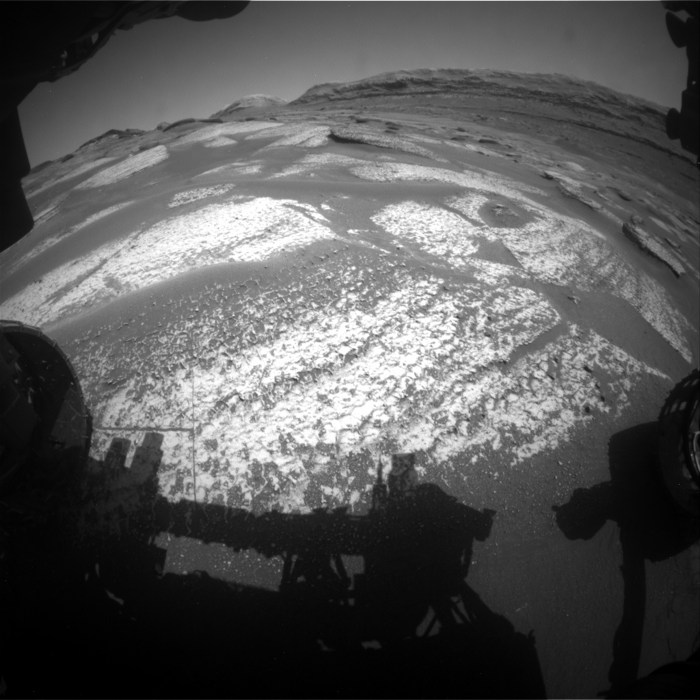
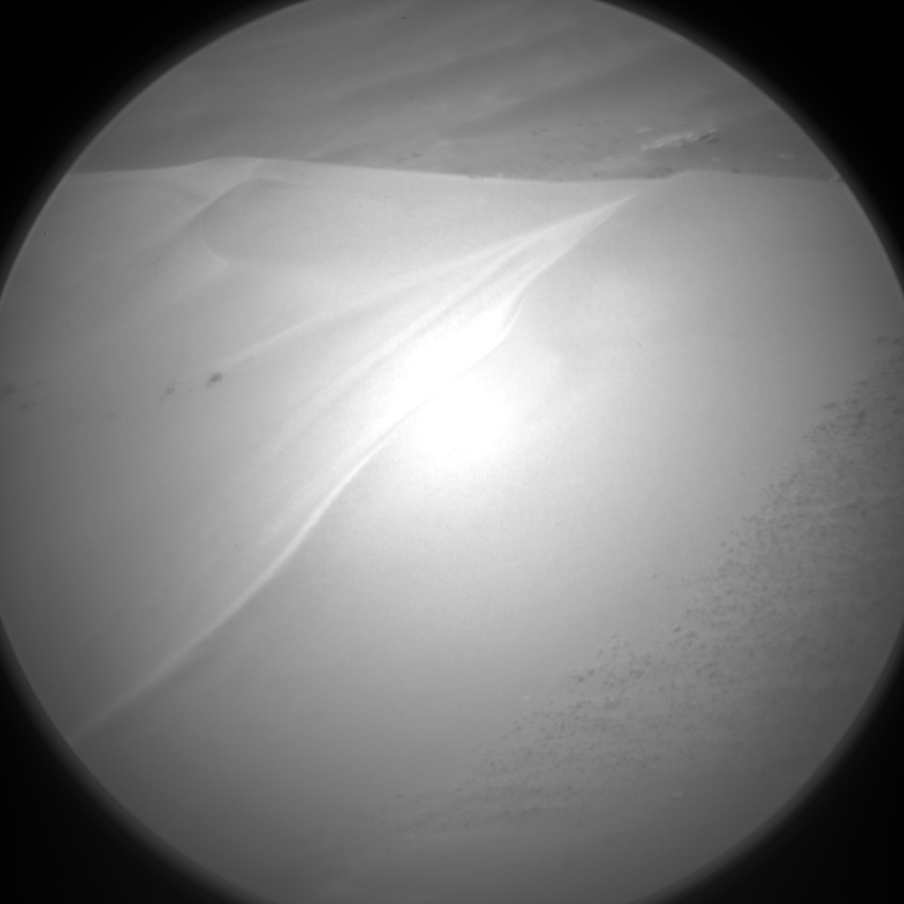

En vivo
Lo que la tripulación debe saber hoy, desde fuentes abiertas de NASA y NOAA. Los datos son del 14 nov 2026; el reloj y la señal Tierra–Marte se calculan en vivo.
Imágenes de Curiosity · sol 5073
Ver archivo


Bitácora
Cómo se conecta en vivo
| Dato | Fuente pública | Uso |
|---|---|---|
| Posición de Curiosity | mars.nasa.gov/mmgis-maps/MSL/Layers/json/MSL_waypoints.json | Validación en Gale |
| Clima REMS | mars.nasa.gov/rss/api/?feed=weather&category=msl&feedtype=json | Temperatura |
| Imágenes del rover | mars.nasa.gov/api/v1/raw_image_items/ | Galería |
| Clima espacial | services.swpc.noaa.gov/json/ | Radiación |
| Relieve, hielo y minerales | trek.nasa.gov/mars · HiRISE · SHARAD · CRISM · THEMIS | Capas |